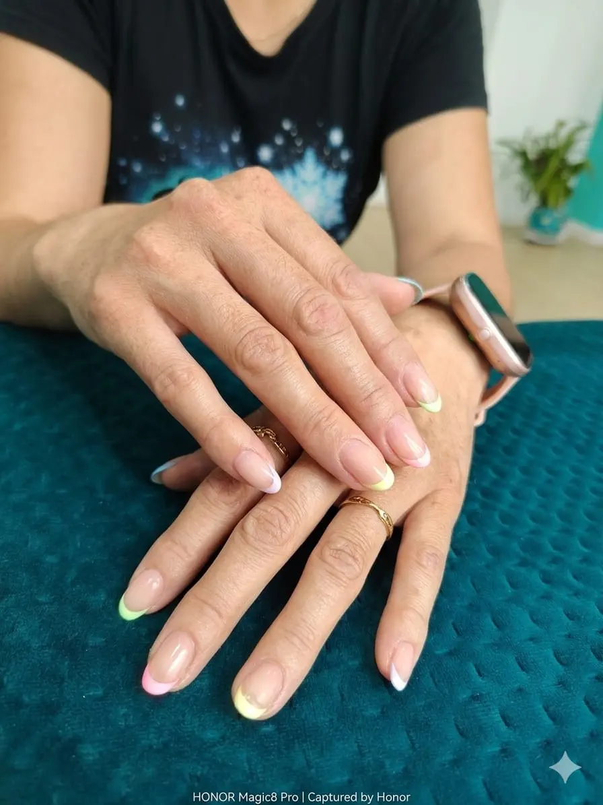

ManicuraManicura semipermanente en Leganés
Color duradero, brillo elegante y acabado uniforme para manos cuidadas durante más tiempo.
En Sonia Caracola trabajamos este servicio con una filosofía muy clara: cuidar el detalle, respetar tu estilo y conseguir un resultado bonito, cómodo y coherente contigo. Nuestro enfoque combina técnica profesional, escucha y un ambiente inspirado en la calma del mar.
Beneficios del servicio
Valoración personalizada
Acabado cuidado
Trato cercano
Recomendaciones posteriores
Cómo trabajamos
- Escuchamos qué resultado buscas y revisamos el estado de la zona a tratar.
- Preparamos el servicio con higiene, precisión y materiales adecuados.
- Realizamos el tratamiento cuidando forma, acabado y comodidad.
- Te explicamos cómo mantener el resultado durante más tiempo.